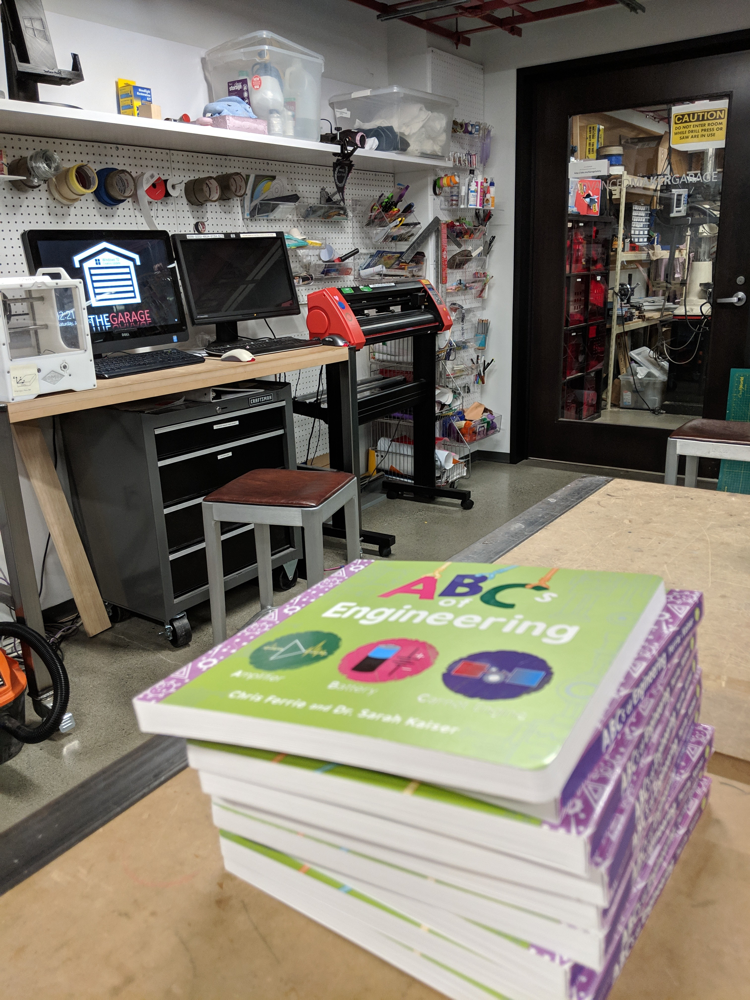
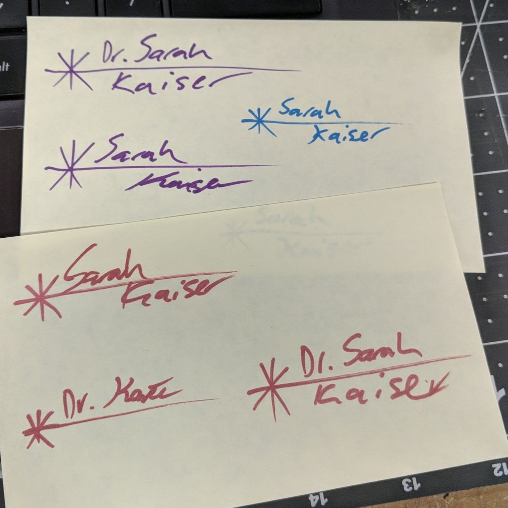
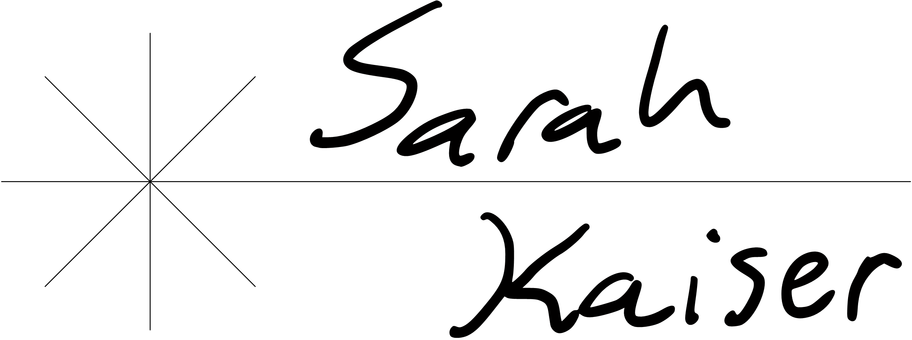
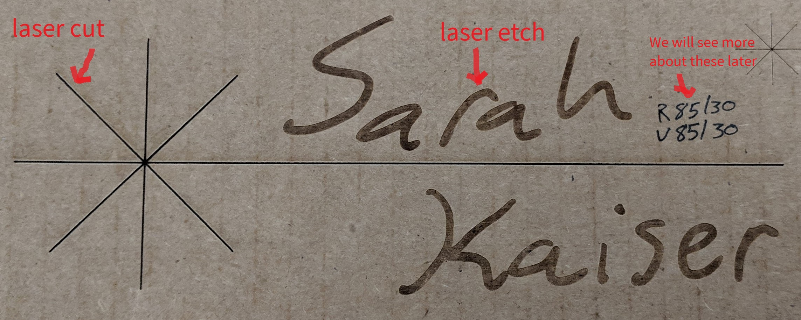
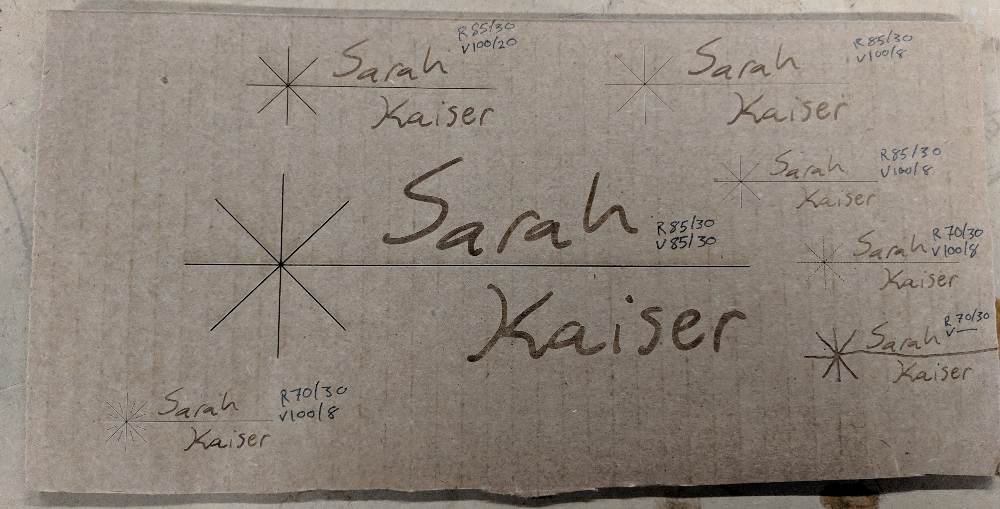
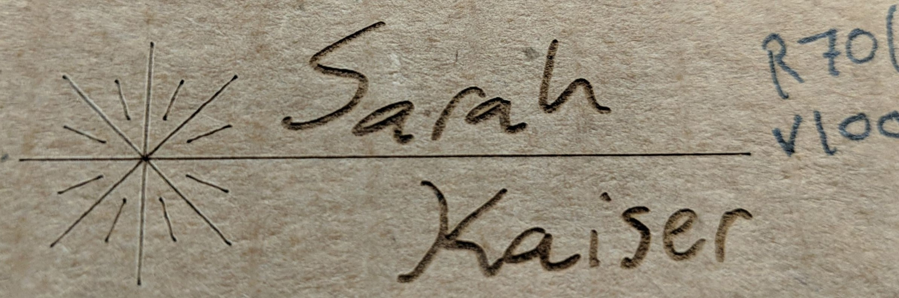
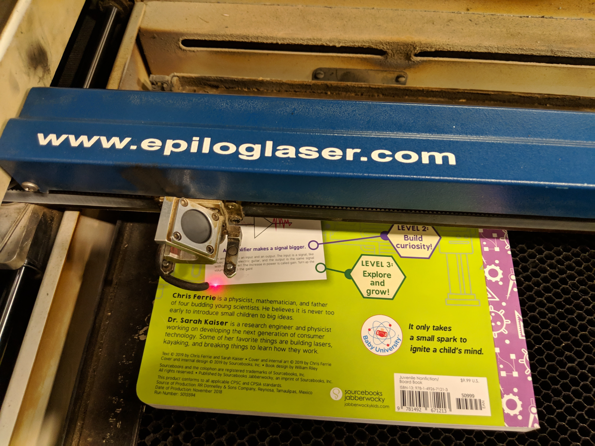

Give an engineer a book to sign...
… and they will want a laser to go with it! 😄⚡

I always start maker projects with the best of intentions to blog what my partner @cgranade and I work on, but sometimes in the excitement of making something new, blogging can get forgotten. An important part of the engineering process is documentation, though, so it seems fitting to kick-off posting some of the stuff we make with a fun way to personalize books!
In this episode, my partner and I had just gone out and bought a bunch of sharpies because my first book (such an amazing feeling!!) is now out, The ABCs of Engineering with Chris Ferrie.

I had promised a bunch of people signed copies, and wanted some good ammo. I started working on the signature I wanted to use, but really didn’t like how the Sharpies made it look, or how easily the signatures could be wiped off some of the printing.

So I thought, how could I make this more permanent and more personal...“Can this problem be solved with lasers (y/n)?”
y
The mission:
Take the signature that I was practicing to sign the books with, and turn that into something that could be etched on a board book.
I have to thank @cgranade for his help on this, he was the official laser cutter whisperer for this project (and because I don’t have access to a laser cutter at the moment ♥).
The plan:
-
I started by using a Surface Pen to draw what I wanted in a OneNote page.
Pretty straight forward, also considered paper with Sharpies and photo and then tracing, but that seemed like it would take longer.

Also it had to involve lasers, so there is an homage to laser safety signs:
-
Figure out what parts of the design to etch or cut.
Laser cutters often have two modes, and there are tradeoffs for each mode.
- Cutting is faster, better for finer detail often, and well, cuts stuff.
- Etching works when you want to change larger areas of your material, kinda like an adjustable laser peeler. I decided that because I can’t draw a straight line for anything, I wanted to do the laser emission symbol as a cut that I would use the computer to design. The rest of the letters I wanted to etch to maintain the look as if I had signed it with a pen.

After the types of cut are chosen, the digital file is prepped (this step varies highly on the laser cutter itself, check the manual or software for a guide).
-
Experiment with setting of the laser on a similar material to achieve desired cut.
With the file loaded on the control computer, we need to figure out what laser settings achieve the cuts and etches we want. On the laser cutter we used here, this meant varying the speed and power of the laser for each part of the design. These settings do not hold for all materials, and can even change as the laser cutter itself ages, so we had to find good ones for the kind of paperboard the books were. Rather than messing up a book, we used some corrugated cardboard from the box they came in to test. @cgranade has a real knack from experience for guessing good values for these parameters, so this testing went pretty quick. You can see some of his tests here, with notes of what settings he used for each:

The "R" and "V" next to each signature are [@cgranade](https://twitter.com/cgranade)'s notes on what _raster_ and _vector_ settings are needed, which the control software uses to configure etching and cutting (respectively).We ended up going with the one below (with a style modification suggested by @cgranade) because I liked the depth of the etch and the cut was not so deep it would risk cutting through the back page.

-
Test on an actual book!!!
After testing some parameters that worked on our cardboard proxy, it was time to try it on the real thing! I would have normally used some blue painter tape to cover the area I was going to cut to reduce scorching from the laser, but we didn’t see much on the cardboard we were testing on and if it did happen it would add to the ambiance :) Also, since each book was not quite flat, the focus of the laser was adjusted for each book to make sure the design looked the same on each. Here is some photos and a video of the cut!

Now for the fun part: A GIVEAWAY!
Post a picture or description of what word/term you would add to the ABCs of Engineering on Facebook, Instagram, or Twitter with the hashtag #ABCsofEngineering and I will pick 3 at random on Feb 1st and mail a laser signed copy of The ABCs of Engineering to you!
You can find copies of ABCs of Engineering at all of the following retailers:
Sarah Kaiser
Community Maintainer
𝜋-thonista with PhD in Physics (quantum information) who loves to burn things w/ lasers 💖.